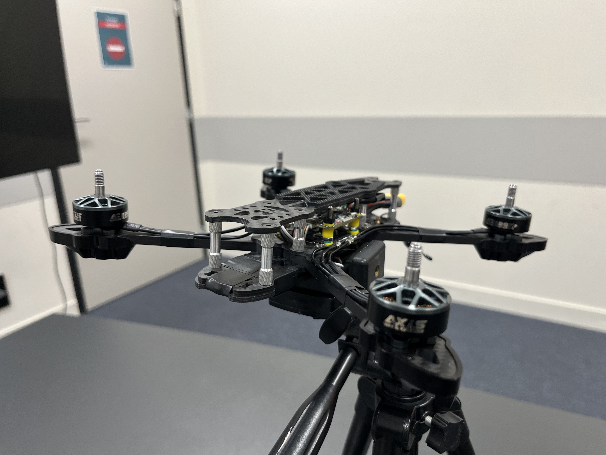
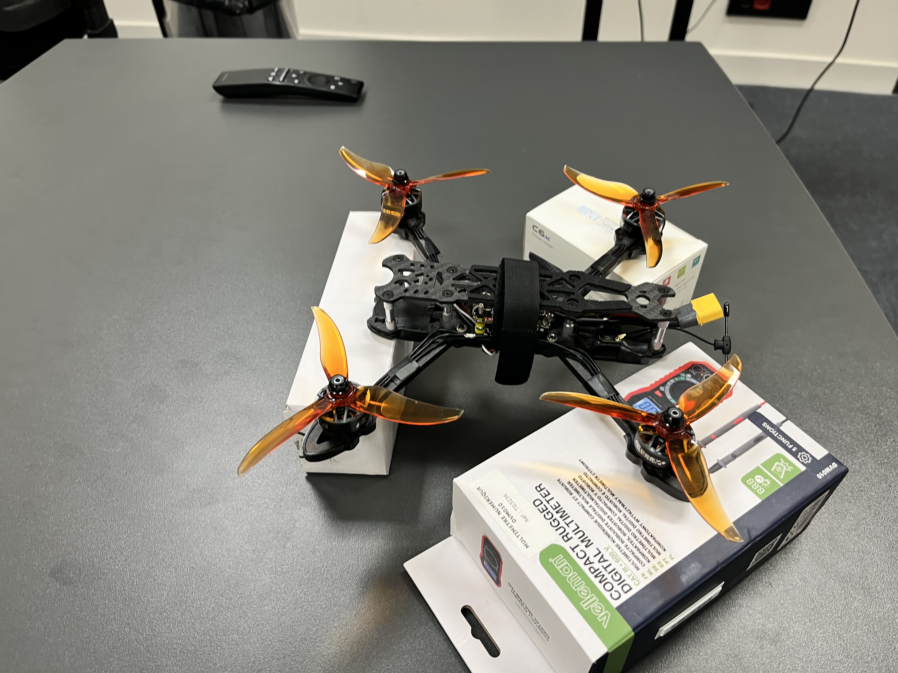
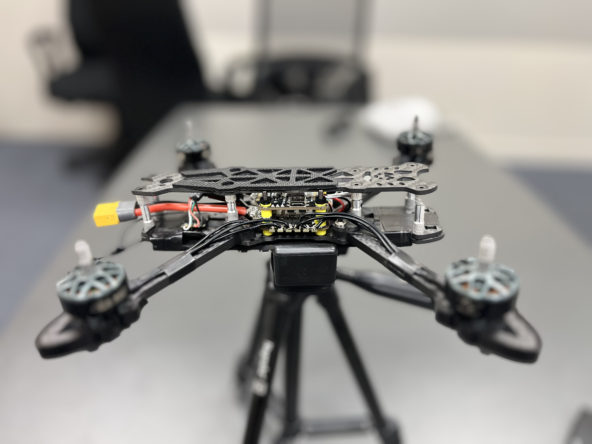
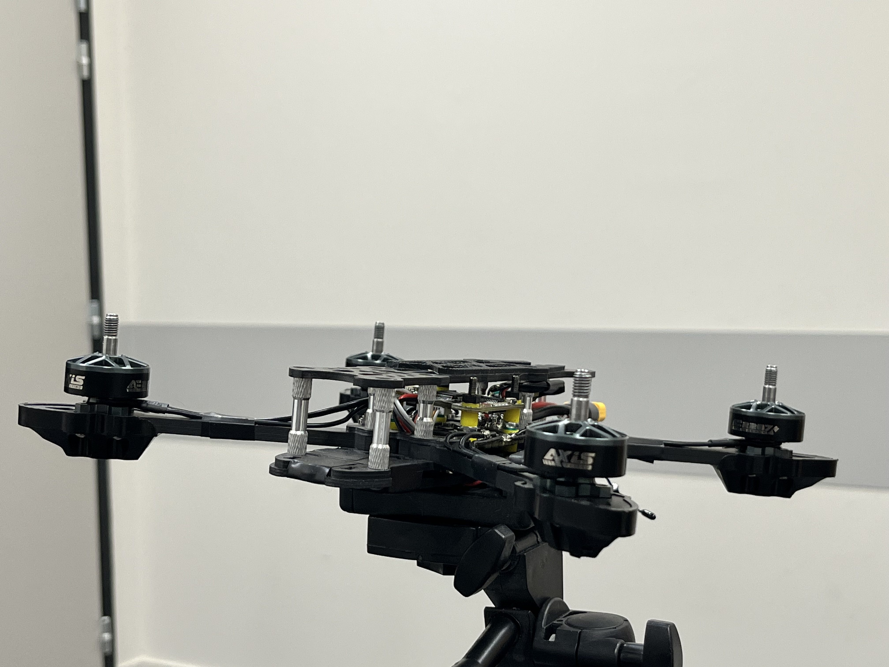
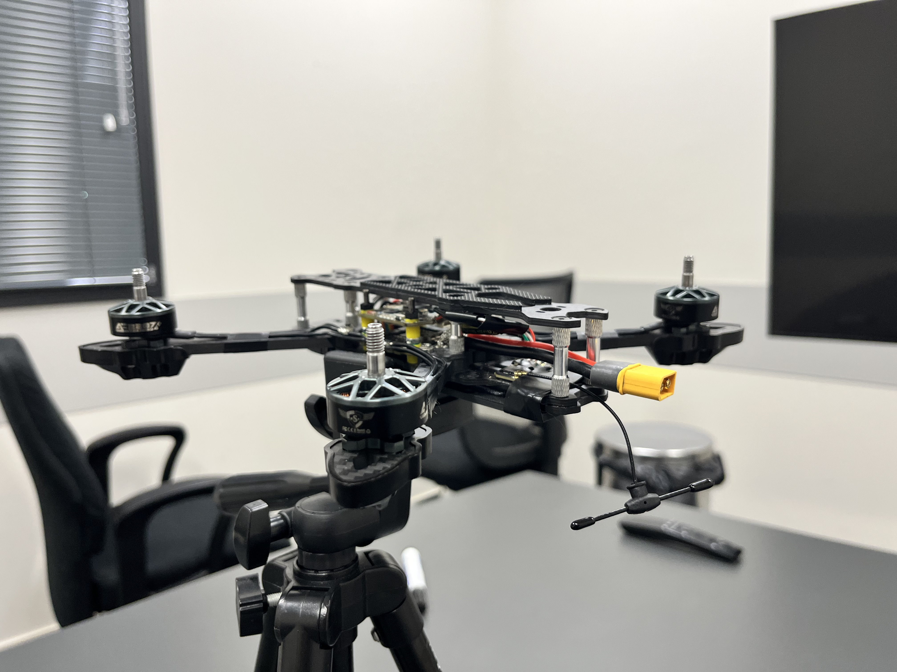
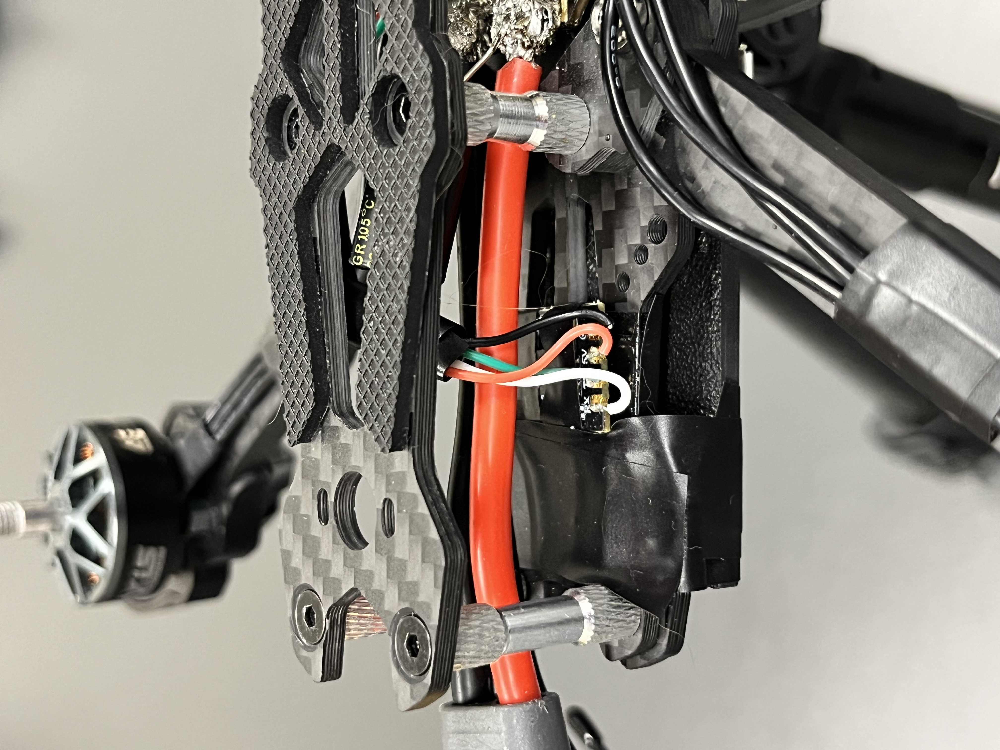

Gallery
A visual journey through the making of The Watcher — from raw parts to flying prototype.
Real images from the workshop — hardware, testing, and iteration in progress.






First iteration of the 250mm frame. Motor and ESC selection, initial wiring harness built and tested on the bench. ESC calibration and motor direction verified.
First stable hover on custom PID firmware. Hundreds of tuning iterations in simulation before first real flights. Safety failsafes integrated and tested.
GPS integration goes live. The Watcher completes its first fully autonomous waypoint mission — navigates, holds position, and returns home without pilot input.
Real-time mission planning dashboard. Live telemetry, geofence editing, and mission replay. Currently in active development.
Onboard obstacle detection, visual tracking, and autonomous landing. This is what your Kickstarter backing unlocks.